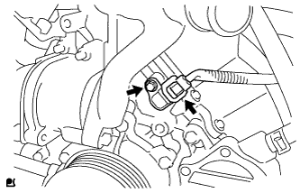

CAMSHAFT POSITION SENSOR > INSTALLATION |
| 1. INSTALL CAMSHAFT POSITION SENSOR |
 |
Apply a light coat of engine oil to the O-ring.
 |
Install the sensor with the bolt.
Connect the sensor connector.
| 2. INSTALL NO. 1 ENGINE COVER SUB-ASSEMBLY |
 |
Install the engine cover with the 2 nuts.